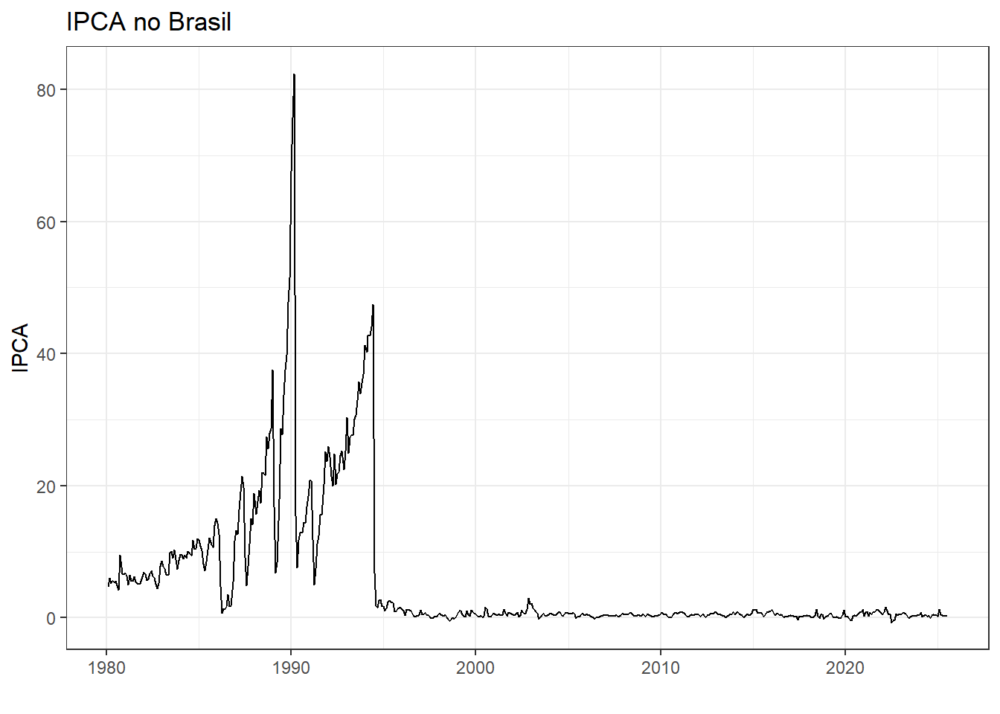
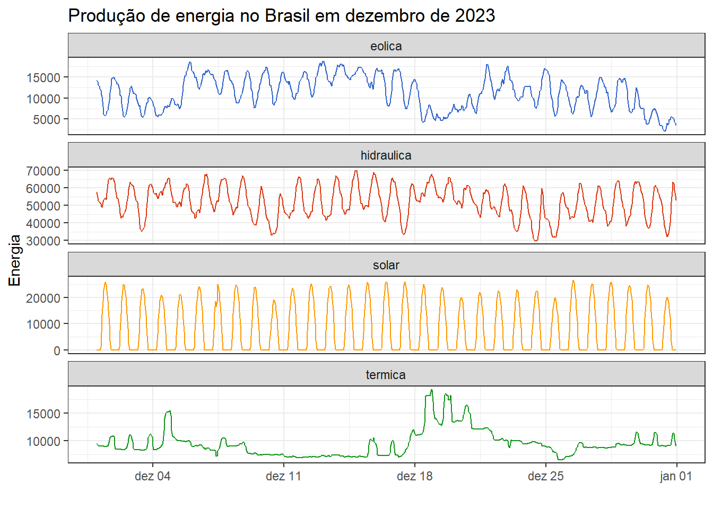
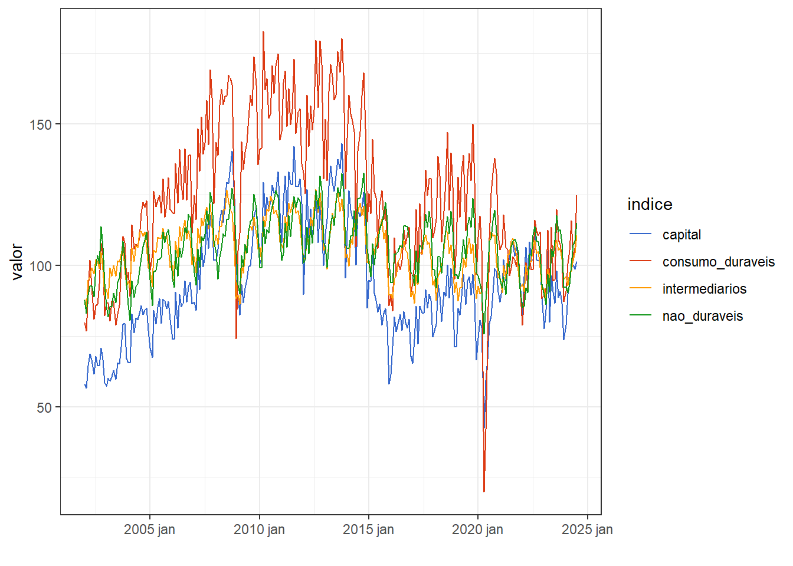

1 Introdução e gráficos
1.1 Introdução às séries temporais e previsão
Uma série temporal consiste em um conjunto de observações de uma variável aleatória ordenadas no tempo. Uma série temporal pode ser descrita matematicamente como \(y_1, ..., y_T\), onde \(T\) consiste no último período da série. A análise de séries temporais visa o estudo e obtenção de modelos preditivos para este tipo de dados. O objetivo ao final é realizar previsões com o modelo obtido, de forma a viabilizar ações de planejamento, prever cenários e possibilidades.
A previsão é importante em diversos contextos das engenharias, administração e ciências. Por exemplo, para decidir o nível de produção e planejar o próximo período é necessário prever a demanda. Para avaliar se um investimento é viável é importante prever a sua rentabilidade. Para planejamento dos sistemas energéticos é importante prever o consumo de energia. Para prever a capacidade de produção de energia hidroelétrica é preciso prever a precipitação.
Neste curso serão apresentados diversos modelos para análise e previsão de séries temporais, sendo boa parte dos exemplos obtidos de casos brasileiros. Serão consideradas séries de dados de produção, indústria, agricultura, clima, energia, economia, investimentos, mobilidade, transporte, saúde, entre outros.
1.2 Exemplos de séries e visualizações
1.2.1 Séries univariadas
Na Figura 1.1 observa-se graficamente a série temporal do índice de preços ao consumidor (IPCA), com frequência mensal a partir de 1980. A série foi obtida em Ipeadata. As seis primeiras observações da série também são exibidas na Tabela 1.1. A primeira observação é \(y_1 = 4,62\), ou seja, no primeiro mês de observação da série, fevereiro de 1980, o IPCA foi de 4,62%. Já a segunda observação é \(y_2 = 6,04\) e assim sucessivamente, conforme disposição na Tabela. Observa-se graficamente a estabilização do índice a partir de 1994, a partir da adoção do plano real.
| data | ipca |
|---|---|
| 1980-02-01 | 4,62 |
| 1980-03-01 | 6,04 |
| 1980-04-01 | 5,29 |
| 1980-05-01 | 5,70 |
| 1980-06-01 | 5,31 |
| 1980-07-01 | 5,55 |
Para visualizar melhor como o IPCA variou nos últimos 20 anos, pode-se selecionar os dados a partir do ano 2000. O resultado é plotado na Figura 1.2.

A Tabela 1.2 exibe as primeiras observações da série temporal de volume de carros produzidos no Brasil a partir de 1990. A série foi obtida em dados estatísticos ANFAVEA e apresenta frequência mensal.
| data | quantidade |
|---|---|
| 1990-02-01 | 57258 |
| 1990-03-01 | 32740 |
| 1990-04-01 | 32812 |
| 1990-05-01 | 58464 |
| 1990-06-01 | 37632 |
| 1990-07-01 | 43697 |
A série é plotada na Figura 1.3. Pode-se observar alguns períodos de queda no volume, por exemplo, próximo de 2015 durante a crise política do país e em 2020 durante a pandemia, onde a demanda chegou a níveis anteriores aos dos anos 2000.
1.2.2 Séries temporais multivariadas
A Figura 1.4 expõe a série temporal com frequência horária do volume de ônibus e caminhões de dois eixos trafegando na Br040 no quilômetro 709 nos meses de agosto e setembro de 2025. São plotadas as séries no sentido crescente (C) e decrescente (D). A série está disponível em dados do plano nacional de contagem de tráfego. Observa-se padrões sazonais diário e semanal. O primeiro dia do mês de agosto de 2023 foi uma terça-feira. A partir da primeira hora do dia observa-se o crescimento do volume de veículo até um pico de tráfego próximo de 60 veículos com posterior decréscimo com o avançar da noite até um volume mínimo bem próximo de zero. O padrão diário se repete, porém, com menor volume nos fins de semana. O padrão semanal é identificado pela repetição de cinco ciclos de maior fluxo, caracterizando os dias de semana, e dois com menor fluxo, consistindo nos fins de semana.
Na Tabela 1.3 são exibidas apenas as primeiras observações da série temporal em frequência horária de produção de energia eólica no ano de 2023 no Brasil. Os dados estão disponíveis em Dados abertos do operador nacional do sistema elétrico.
| data | tipo | energia |
|---|---|---|
| 2023-01-01 00:00:00 | eolica | 14138,75 |
| 2023-01-01 01:00:00 | eolica | 13790,86 |
| 2023-01-01 02:00:00 | eolica | 13612,57 |
| 2023-01-01 03:00:00 | eolica | 13277,32 |
| 2023-01-01 04:00:00 | eolica | 13009,72 |
| 2023-01-01 05:00:00 | eolica | 12311,20 |
As séries temporais de energia eólica, hidráulica, solar e térmica são plotadas na Figura 1.5 para o mês de dezembro de 2023. De forma geral é possível ver o padrão cíclico diário de produção. Enquanto a energia solar é obviamente produzida durante os períodos de sol, a eólica tem maior volume de produção durante a noite e madrugada, quando venta mais forte. Já a energia elétrica, fonte dominante no Brasil, pode ser controlada para complementar as demais. A energia térmica, menos sustentável que as demais, é produzida em momentos de queda nos níveis de produção das demais fontes, justificando seu padrão menos previsível. A visualização em painéis separados é útil, uma vez que possibilita avaliar melhor o padrão e variabilidade de cada série, permitindo ajustar a escala de cada série de forma individual.

Outro exemplo de série multivariada é a de índices de produção de bens de capital, de consumo duráveis, intermediários e de consumo não duráveis, plotada na Figura 4.5 em um mesmo painel gráfico. A série foi obtida em Pesquisa industrial mensal - produção física do IBGE. Essa visualização em um úncio painel é interessante em casos onde as séries apresentam escala similar, possibilitando a comparação destas.

Um último exemplo de série temporal multivariada considera dados de visualizações de 4 vídeos da playlist Tolerâncias e ajustes do canal da engenharia de manufatura e qualidade. A série multivariada é plotada na Figura 1.7. A série se inicia em 2018, ano de lançamento do canal, porém só tem dados segundo a data de lançamento de cada vídeo.

1.2.3 Gráficos de sazonalidade
É possível visualizar padrões sazonais de forma distintas. Sejam os dados de tráfego de veículos de passeio na BR040 no quilômetro 709. A Figura Figura 1.8 ilustra um gráfico de sazonalidade diária para o mês de agosto de 2023 para ambos sentidos de tráfego. Os dias são plotados em escala de cor, enquanto o horizonte diário em horas é plotado no eixo horizontal. Observa-se um tráfego mais baixo nas primeiras horas do dia, com aumento no volume de 3 às 9 da manhã, estabilidade durante a manhã e decréscimo com o início da noite. É possível observar também que para a maior parte dos dias o volume de tráfego nas horas mais movimentadas tem pico em 250 veículos. Porém há dias com volume maior.
Para uma melhor visualização sejam os dias de semana separados em distintos painéis, conforme Figura Figura 1.9. Observa-se agora mais claramente o padrão para cada dia de semana. Domingos são os dias mais movimentados considerando este tipo de veículo. De terça a quinta o tráfego apresenta padrão similar.
Ainda considerando os dados de tráfego na BR-040 é possível visualizar a sazonalidade semanal. A Figura 1.10 considera as semanas em cores e no eixo horizontal o horizonte semanal. Observa-se um padrão consistente para as distintas semanas do mês de Agosto.
Tomando novamente os dados de visualizações de vídeos no youtube, pode-se visualizar os dados da série do vídeo 4 em subséries anuais, para avaliar se há sazonalidade. A Figura 1.11 expõe o gráfico de sazonalidade. Os dados foram agregados mensalmente. O padrão cíclico não é tão claro, possivelmente devido a diferenças nos calendários de ensino entre os anos e também devido à pandemia de COVID-19. Pode-se visualizar os picos de visualizações de abril a junho e de Setembro a Novembro, coincidindo com períodos de picos de estudos nos dois semestres anuais.

Um gráfico de subsérie sazonal considera uma unidade de tempo em distintos painéis e um múltiplo desta unidade no eixo horizontal. A Figura Figura 1.12 plota tal gráfico para a série de índice de bens de capital. As linhas horizontais em azul consistem nas médias mensais, permitindo observar a variação ao longo do ano considerando tais médias. Já a subsérie observada em cada painel permitem observar a tendência ao longo dos anos dentro de cada mês. Para este índice, independente do mês observa-se um aumento na produção de bens de capital até 2013/2014, seguido de queda e posterior recuperação seguida de nova queda, provavelmente devido à pandemia de COVID-19.
1.2.4 Correlação entre séries
A Figura 4.6 exibe diagramas de dispersão e correlações aos pares para a série multivariada de produção de bens exposta na Figura Figura 4.5. Pode-se confirmar a alta relação linear entre tais índices, com correlação linear positiva variando de 0,70 a 0,84.

1.2.5 Gráficos de decomposição
Existem diversas formas de decompor séries temporais. A Tabela 1.4 expõe os resultados de uma decomposição aditiva usando o método STL para a série de produção de bens de capital. Tal método será explicado no capítulo 3. A componente cíclica é removida e o restante é suavizado para aproximar a tendência. O resíduo consiste na série original subtraída da tendência e da componente sazonal.
| Data | valor | trend | season_year | remainder |
|---|---|---|---|---|
| 2002 jan | 58,19 | 66,25 | -8,87 | 0,81 |
| 2002 fev | 56,75 | 65,93 | -9,81 | 0,63 |
| 2002 mar | 64,68 | 65,62 | 1,80 | -2,74 |
| 2002 abr | 68,90 | 65,30 | -2,54 | 6,14 |
| 2002 mai | 66,66 | 65,02 | 1,92 | -0,28 |
| 2002 jun | 61,72 | 64,74 | -0,13 | -2,90 |
A Figura 1.14 expõe graficamente a decomposição da série do índice de produção de bens de capital. Observa-se claramente a separação da tendência e do padrão sazonal da série, facilitando a interpretação desta.
1.2.6 Gráficos de previsão
Um dos objetivos principais da análise e modelagem de séries temporais é a realização de previsões. Quando a série tem padrão não aleatório, com tendência e/ou sazonalidade, por exemplo, existem diversos métodos adequados para realizar modelagem e obter boas previsões. Obviamente quanto maior o horiznte de previsão almejado, maior a dificuldade de obter bons resultados.
A Figura Figura 4.16 exibe a série de temperatura instantânea na cidade de São joão del-Rei dos dias 15 a 29 de maio. Os dados foram obtidos em Instituto Nacional de Meteorologia. Observa-se que a série plotada em cor preta exibe comportamento cíclico dada a variação diária entre a temperatura mínima, que varia de 8 a 13 ºC, e a máxima diárias, que gira em torno de 25 a 28 ºC no período. Também é possível observar uma tendência de aumento na temperatura nos dias considerados. A Figura expõe a previsão para dois dias à frente em azul, com intervalos de confiança de 80 e 95%.

1.3 Implementação em R
A seguir apresenta-se boa parte da implementação na linguagem R para obter os dados, gráficos e análises expostos no presente capítulo. Os dados utilizados estão disponíveis em Previsão, por Robson Bruno Dutra Pereira.
Carregando pacotes.
library(forecast)
library(tsibble)
library(feasts)
library(fable)
library(dplyr)
library(tidyr)
library(ggplot2)
library(lubridate)
library(GGally)
theme_set(theme_bw())Leitura dos dados de IPCA. Os dados em extensão *.csv são inicialmente armazenados em um data.frame no R, com duas colunas, data e ipca.
ipca <- read.csv("ipca.csv", header = T)É necessário transformar o data.frame em um tipo de dados ideal para séries temporais. O tipo tsibble é adequado para a sintaxe que será usada neste curso. Antes, porém, é necessário transformar a coluna data em Date, de forma que o R entenda como tal, pois inicialmente a coluna com data como lida de um *.csv pode ser reconhecida como character ou como numeric, dependendo do formato desta coluna. O operador |> é o operador pipe do R, o qual serve para encadear operações. O comando mutate é usado junto com o comando as.Date para mudar a coluna data para Data. É necessário entender como os dados estão armazenados para definir o argumento format, com a ordem adequada de entrada. O dia é identificado com "%d", enquanto o mês numérico com "%m" ou mês character com "%b", enquanto o dia é identificado com "%d". Sugere-se usar ?as.Date para mais detalhes e exemplos. O comando as_tsibble visa transformar o data.frame em tsibble, sendo que o argumento index deve receber uma coluna do tipo Date.
ipca_ts <- ipca |>
mutate(data = as.Date(paste("01", data), format = "%d %Y %b")) |>
as_tsibble(index = data)
head(ipca_ts)Para visualizar a série pode-se usar o comando autoplot.
ipca_ts |>
autoplot(ipca) +
labs(y = "IPCA", x = "", title="IPCA no Brasil")Vizualizando a série a partir de 2018, usando o comando filter_index.
ipca_ts |>
filter_index("2018" ~ .) |>
# filter(year(data) >= 2018) |> # outra opcao
autoplot(ipca) +
labs(x="", y="IPCA",
title="IPCA no Brasil a partir de 2018")Série de volume de produção de carros no Brasil.
carros <- read.csv("vendas_veiculos.csv",
sep=";")
carros_ts <- carros |>
mutate(data = as.Date(data, format = "%d/%m/%Y")) |>
as_tsibble(index=data)
head(carros_ts)Visualizando a série.
carros_ts |>
autoplot(quantidade) +
labs(x="", y="Carros produzidos",
title="Produção de carros no Brasil")Série multivariada de produção de energia em 2023 no Brasil.
energia_2023 <- read.csv("energia_2023_sin.csv", header = T)
# head(energia_2023) |> gt()No caso de séries com frequência horária é importante usar o comando as.POSIXct, definindo também hora - "%H", minuto - "%M", e segundo - "%S". Séries multivariadas podem ser alocadas em múltiplas colunas, como no caso da série em questão. Pode-se empilhar as séries com o comando pivot_longer, identificando corretamente o nome da coluna com as séries com o argumento values_to e o nome da coluna com a identificação das séries com o argumento values_to. Ao transformar em tsibble após empilhar as séries é importante identificar as séries com o argumento key.
energia_2023_ts <- energia_2023 |>
mutate(data = as.POSIXct(data, format = "%Y-%m-%d %H:%M:%S")) |>
pivot_longer(!data, names_to = "tipo", values_to = "energia") |>
as_tsibble(index = data,
key = tipo)
energia_2023_ts|> head()Visualizando os dados de dezembro em painéis separados. Usa-se para tal o comando facet_wrap para plotar cada série em um painel gráfico.
energia_2023_ts |>
filter_index("2023-12") |>
autoplot(energia) +
facet_wrap(nrow=4, ~ tipo, scales = "free_y") +
labs(y = "Energia",
x = "",
title="Produção de energia no Brasil em dezembro de 2023") +
guides(colour="none")Série de índices de produção de bens de consumo.
prod <- read.csv("Producao_bens.csv", header=T)
prod$Data <- yearmonth(seq(as.Date("2002/1/1"),
length=271, by="month"))
prod <- prod |>
pivot_longer(cols = capital:nao_duraveis,
names_to = "indice", values_to = "valor")
prod_ts <- prod |>
as_tsibble(key = indice, index = Data)Visualizando em um único gráfico.
prod_ts |>
autoplot(valor)Seja a série de fluxo de veículos na BR040 no quilômetro 709 no ano de 2023. A série apresenta frequência horária. O comando dmy_h pode ser usado para criar a data a partir das colunas de data e hora, após concatená-las com paste. Essa série é duplamente multivariada uma vez que apresenta dois sentidos e diversos tipos de veículos identificados de A a L. Porém, neste caso, será considera apenas a série de veículos de passeio (I) nos dois sentidos, crescente (C) e decrescente (D).
br040_709 <- read.csv("040_709_2023.csv", header = T)
br040_709_ts <- br040_709 |>
mutate(
datatempo = dmy_h(paste(Data, Hora))) |>
select(-Data, -Hora) |>
as_tsibble(index = datatempo,
key = Sentido)O gráfico sazonal ´pode ser obtido com o comando gg_season. Para esta série é interessante visualizar tanto a sazonalidade diária, period = "1d", quanto a semanal, period = "1w".
br040_709_ts |>
filter_index("2023-08") |>
# filter(Sentido == "C") |>
fill_gaps() |>
gg_season(I, period = "1d") +
labs(x = "hora",
y = "Veículos",
title = "Sazonalidade diária no tráfego na BR040")O Gráfico de subséries sazonais pode ser obtido com o comando gg_subseries.
prod_ts |>
filter(indice == "capital") |>
gg_subseries(valor) +
labs(y="", x="", title="")Para avaliar a correlação entre séries os dados devem estar no fromato de data.frame. Logo, pode-se usar o comando pivot_wider para desempilhar as séries. Sugere-se usar o comando ggpairs que provê gráficos de dispersão aos apres entre as séries, gráficos de densidades amostrais individuais e o coeficiente de correlação de Pearson para todos os pares de séries.
df_prod <- prod_ts |>
pivot_wider(names_from=indice,
values_from=valor)
ggpairs(df_prod, columns = 2:5, progress = F)1.4 Execícios propostos
- Faça o gráfico da série temporal multivariada de produção de energia para o mês de julho de 2023.
- Faça o gráfico anterior em painéis separados.
- O código abaixo carrega os dados da série de visualização de vídeos do youtube.
tol4_tsibbleconsiste na série do vídeo 4. Obtenha o gráfico da série do vídeo 4.
tol <- read.csv("tolerancia_ajuste.csv")
tol_ts <- tol |>
mutate(Date = as.Date(Date, format = "%Y-%m-%d")) |>
as_tsibble(index = Date, key = Video)
tol4_ts <- tol_ts |>
filter(Video == "#4", year(Date) >= 2019,
year(Date)<2024)- O código abaixo acumula mensalmente as visualizações do vídeo 4. Obtenha os gráficos sazonais para a série mensal. Defina
labels = "left"elabels_repel = Tpara identificar os anos próximos às linhas.
tol4_mensal <- tol4_ts |>
index_by(YearMonth = yearmonth(Date)) |>
summarise(Views = sum(Views))- O código a seguir carrega a série de temperatura horária de São João del-Rei para 2024. Considerando os dados de 14 dias faça o gráfico de sazonalidade diária e interprete-o.
tempo_sjdr <- read.csv("sjdr2024.csv",
header=T)
tempo_sjdr_ts <- tempo_sjdr |>
mutate(Data = as.POSIXct(paste(Data,Hora),
format = "%Y/%m/%d %H")) |>
select(!Hora) |>
as_tsibble(index = Data)
tempo_sjdr_14_dias <- tempo_sjdr_ts |>
filter_index("2024-06-15 00:00:00" ~ "2024-06-2923:00:00")